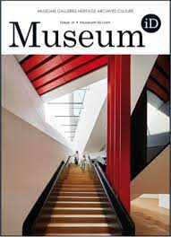

<ion-header>
  <ion-toolbar>
    <ion-title>Magazines <ion-button style = "float: right;" routerLink ="/">Back</ion-button></ion-title>
  </ion-toolbar>
</ion-header>


<ion-content>
  <ion-card><ion-item>Art & Museum</ion-item>
  <ion-item></ion-item>
</ion-card>
<ion-card><ion-item>Special Edition Magazines</ion-item>
  <ion-item></ion-item>
</ion-card>
<ion-card><ion-item>Museum Id</ion-item>
  <ion-item></ion-item>
</ion-card>
<ion-card><ion-item>British Museum Magazine</ion-item>
  <ion-item></ion-item>
</ion-card>
<ion-card><ion-item>Natural History</ion-item>
  <ion-item></ion-item>
</ion-card>
<ion-card><ion-item>Bones of Mankind</ion-item>
  <ion-item></ion-item>
</ion-card>
</ion-content>
